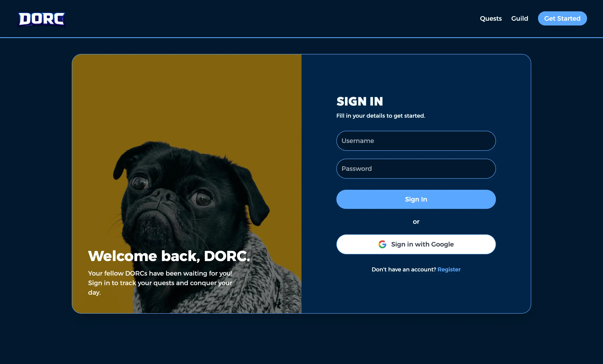
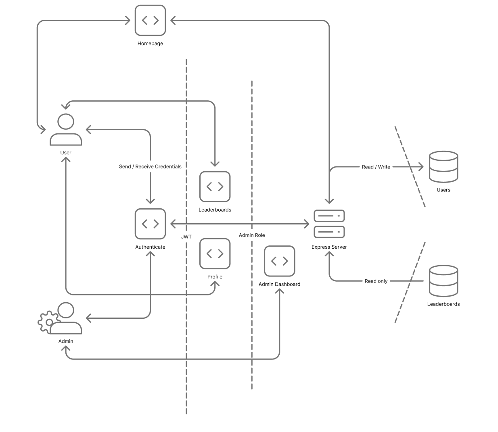

DORC
Overview
DORC is a MERN-stack productivity app that turns habit-building into an RPG-style game. It was built by a four-person team for our web security course. The name is just our first initials: Diane, Owen, Radzil, and Chris.
My work covered the server setup and HTTPS, security headers, the JWT token system, security-aware caching, dependency automation, and threat-modelling the whole thing before testing it like an attacker.
Fair warning: the app itself has no features, but it is very secure!

The Challenge
The project wasn't to ship features; it was to defend a realistic app. That meant treating a small MERN build the way you'd treat something in production: work out how an attacker would actually go after it, then build and verify the protections that hold up.
A default MERN setup quietly gets a lot of this wrong: tokens end up somewhere cross-site scripting can reach them, servers ship without protective headers, sensitive responses get cached, and dependencies drift out of date. My job was to close those gaps on a student timeline, while coordinating with teammates working in the same codebase.
The Process
A Secure Foundation
I scaffolded the MERN project and its setup process, then started with the server itself. For local development, I ran everything over HTTPS using a self-signed OpenSSL certificate; in production, the hosting platform terminates TLS at the edge.
React ↓ ↑ Express API ↓ ↑ MongoDB
On top of that, I used Helmet to set the app's security headers: a Content-Security-Policy that only allows resources from the app's own origin, frame-ancestors: 'none' (with a legacy X-Frame-Options: deny fallback) to block clickjacking, and HSTS to force HTTPS for a year. Locking fonts and scripts to 'self' keeps the browser from loading anything the app didn't ship.
Authentication & Access Control
I built authentication around a two-token model. The access token is short-lived (10 minutes) and stored in React state rather than in storage, so it isn't sitting somewhere XSS can read. The refresh token is long-lived (24 hours) and stored in an httpOnly, secure, sameSite: strict cookie, making it inaccessible to JavaScript.
A custom useAuthFetch hook ties the flow together: when a request returns 401, it silently asks the server for a new access token, retries once, and only logs the user out if the refresh itself fails. On the client I also gated protected pages behind a ProtectedRoute component; the admin dashboard is hidden and blocked from anyone without the admin role, backed by role checks on the server so the frontend can't be bypassed.
export function useAuthFetch() {
const { token, refresh, logout } = useAuth();
const authFetch = async (url, options = {}) => {
let res = await fetch(url, {
...options,
credentials: "include",
headers: { ...options.headers, token },
});
// Access token expired — refresh once, then retry
if (res.status === 401) {
try {
const newToken = await refresh();
res = await fetch(url, {
...options,
credentials: "include",
headers: { ...options.headers, token: newToken },
});
} catch {
await logout();
throw new Error("Session expired");
}
}
return res;
};
return authFetch;
}
Caching With Security in Mind
Caching is usually framed as a performance concern, but here it was also a security decision. I set cache headers per endpoint based on what the data actually was: static badge images cache for a month, while anything sensitive or user-specific, like user records, quests, and daily quotes, is never cached.
The single-page-app fallback and the 500 error handler are both set to no-cache, so users always receive the latest build and transient server errors can't be stored and replayed.
Threat Modeling & Testing
Before hardening anything further, I mapped the app as a Data Flow Diagram and ran it through the STRIDE framework to prioritize risk instead of guessing. That pushed authentication, role-based access, and information disclosure to the top, and confirmed that lower-impact threats like denial-of-service could wait at this scale.

From there, I tested like an attacker: manual probing with Postman and malicious inputs, then automated scanning with OWASP ZAP, which I ran inside a Docker container to keep the scan isolated. ZAP surfaced two Content-Security-Policy weaknesses in the style-src directive: an overly broad source and 'unsafe-inline'. I tightened both to 'self', moved styling out of inline CSS, and re-scanned to confirm the warnings were gone without breaking the UI.
Dependencies & Deployment
To keep the project from rotting, I set up a GitHub Actions workflow that runs every Monday: it installs with npm ci, audits both the client and server for vulnerabilities, updates dependencies, and posts a summary for the team to review rather than auto-merging blind changes.
Finally, I handled the production changes and deployed the React front-end to Vercel and the Express API to Render so the whole thing is live and publicly accessible for anyone who wants to poke at it.
The Solution
The result is a small app with a security posture well beyond a typical class project: HTTPS with hardened headers, a JWT auth system built around short-lived tokens and an httpOnly refresh cookie, security-aware caching, a threat model backed by OWASP ZAP testing, and automated dependency checks. The whole thing is deployed and publicly accessible.
- 10 min Access-token lifetime, auto-refreshed via httpOnly cookie
- STRIDE Threat-modeled, then scanned with OWASP ZAP
- Weekly Automated dependency audits in CI